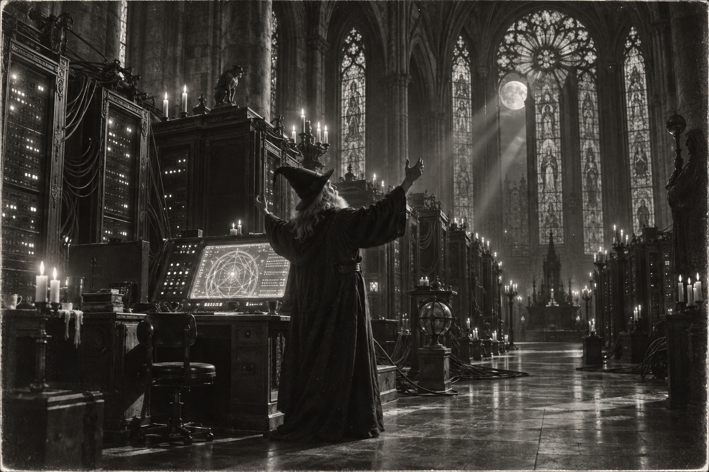

Morning Edition
6:00 AM CDTFinance & Markets
The Flat Close
Morningstar/Dow Jones: Thursday the S&P 500 slipped 0.02% to 7,704.13, a third down day, 1.22% off the August 13 record. Reuters: Nasdaq eked out 0.01% to 26,939.37. The Dow lost 0.31% to 51,349.98. CNBC: Friday futures were green — S&P +0.3%, Nasdaq-100 +0.5%, Dow +0.2%. Through Thursday the Nasdaq is up 1.6% on the week, the S&P 0.7%; the Dow is headed for a fourth losing week, down 0.6%. The 10-year hit 5.225% Thursday, highest since 2007, then cooled to 5.17% Friday. CME prices a 68% October hike. A green open is not a weekly win. Read the 10-year. Then keep Barr next to Michigan.
Source: Morningstar / Dow Jones, Reuters, and CNBC, September 24–25, 2026The Strait on the Table
CNBC: Oil fell Friday after Reuters reported U.S. and Iranian negotiators in New York discussing a phased deal — Hormuz open, blockade off. A June 17 memo already tried that path and collapsed into fighting. Mortgage rates tracked the 10-year to 7.45%, highest since 2024. Morgan Stanley's Heather Berger says goods spending will feel it into the midterms. A talk is not a tanker. Read the strait. Then keep the coupon on the board.
Source: CNBC, September 25, 2026The Shelved Tranche
Private Equity Wire, via Bloomberg: Blackstone pulled Project Eclipse, a ~$3 billion collateralized fund obligation on aging Strategic Partners stakes — about 700 fund interests, some 20 years old, junior yields marketed near 12%, senior near 7.5%. Buyers flinched at leverage and age. BWCFOWorld: the same shop closed BCP Asia III at $13.1 billion, oversubscribed to the hard cap, more than double the last Asia vintage, $7 billion already into India and Japan. A shelf is not a close. Read the vintage. Then keep the secondaries on a leash.
Source: Private Equity Wire and BWCFOWorld, September 2026World & US
Pomp Before the Proof
AP: Trump and Xi sat Thursday. Friendship on one side of the table, healthy competition on the other. Xi warned against the Thucydides trap, pressed Taiwan, resisted Iran pressure, and said AI should stay under human control. CNBC, from the state readout: "Both sides have competition. Cooperation, even more so." Bessent still has a two-month trade truce. Analysts called it ceremony over substance. A dinner is not a deal. Hold the names. Then keep the pad next to the compile.
Source: AP via Watertown Daily Times and CNBC, September 25, 2026Fourteen Times No
AP: The Senate narrowly rejected a war-powers resolution to halt U.S. action in Iran — the 14th try, likely the last on-record vote before November. More Republicans are peeling off as gas prices chew the midterms. The House has voted three times to end the war. Resolutions do not reach the desk. Netanyahu told the Assembly attacking Iran was "one of the easiest decisions," called the walkouts moral cowards, and branded Gaza genocide charges "the biggest lie of the century." A no is not a ceasefire. Read the pump. Then keep Hormuz on the board.
Source: AP via Watertown Daily Times, September 25, 2026Polo, Nolo, and the Pad
AP: Hurricane Polo is still soaking Mexico's Pacific coast. Nolo is now a hurricane, turning toward Hawaii's Big Island — up to 35 inches, hurricane conditions possible Friday night. In Washington, a judge ordered CNN, MS NOW, and Politico restored; some reporters were still blocked Thursday morning, then locked out of an evening event. California's Supreme Court told Riverside's sheriff to return 650,000 seized ballots. A watch is not a miss. Read the cone. Then keep the First Amendment next to the pad.
Source: AP via Watertown Daily Times, September 25, 2026
The Friday Close: the wizard does not chase the wick. He ships one clean compile, then keeps the proof.
"Close the week with one clean compile."- The Developer's Almanac
Sagittarius Horoscope
Justin, India Today says confidence is high and hesitation drops — speech firms, prestige lifts, commercial work lands better than expected. The High Priestess tarot is the quieter diff: advance the important task with inner strength, ignore the noise, speak firmly in the room. Do not judge the week by Thursday's wick. Your Rat-year ingenuity is the clean Friday push, not another all-nighter. Lucky number 9. Lucky color crimson. Lucky hex: #9B1B30. Lucky command: git push.
Tech, AI, Space & Crypto
-
Keep the Human on the Loop
CNBC: Xi told Trump there is more room to cooperate than compete on AI, and that humans should keep control. Bessent had already floated a U.S.-China AI Dialogue and an incident-alert system. China's Commerce Ministry confirmed the first AI talks. CoinEdition: Akamai landed a seven-year, $11.6 billion Anthropic CPU deal, expandable toward $20 billion. A readout is not a chip. Read the loop. Then keep the agent in the sandbox.
Source: CNBC and CoinEdition, September 25, 2026 -
Bitcoin Holds Eighty-Four
CNBC-TV18: BTC around $84,250 Friday after the slide from $87,200. CoinEdition: $84,155, still up ~10% on the week; Ether near $2,676. Spot Bitcoin ETFs took a fifth day of inflows, more than $2.65 billion this streak, though Thursday slowed to $28.1 million. Nearly $80 million in BTC longs flushed under $83,000. Bitget confirmed a $351.6 million hot-wallet breach, Lazarus-linked; the Protection Fund is supposed to cover it. New York sued Polymarket's U.S. arm as unlicensed gambling. Do not chase a Friday wick into a 5.17% 10-year. Inherit the level. Then run git push.
Source: CNBC-TV18 and CoinEdition, September 25, 2026 -
The Pad Slips to Monday
SpacePolicyOnline: Starship remains slipped to September 28. Space.com and Ars: Flight 14 is the first orbital try — Booster 21 and Ship 41, wet dress around Thursday, window ~8:15 a.m. EDT Monday, 26 Starlink V3s, six orbits, Pacific splashdown. Musk and Bezos were on the Thursday state-dinner list. A postponement is not a scrub. Read the window. Then keep the dinner next to the stack.
Source: SpacePolicyOnline, Space.com, and Ars Technica, September 2026
Morning Compile
- S&P flat at 7,704. Yields cooled to 5.17%. Blackstone shelved Eclipse and closed Asia III.
- Xi at the White House. Fourteen times no on Iran. Polo still soaks; Nolo turns toward Hawaii.
- Humans on the AI loop. Bitcoin holds $84k. Starship slips to Monday.
- Close the week with one clean compile. Then run git push.